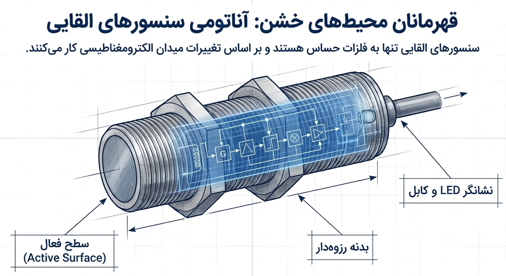
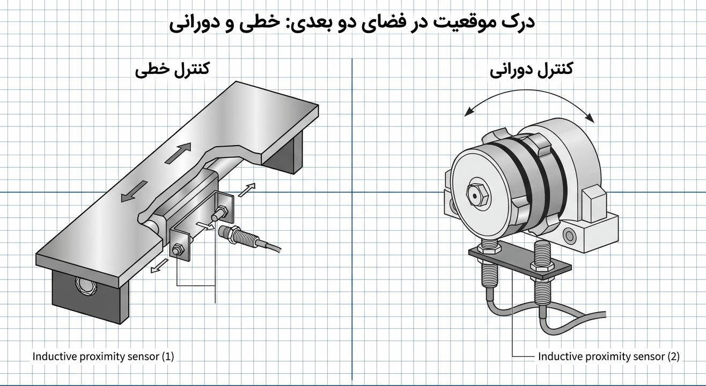
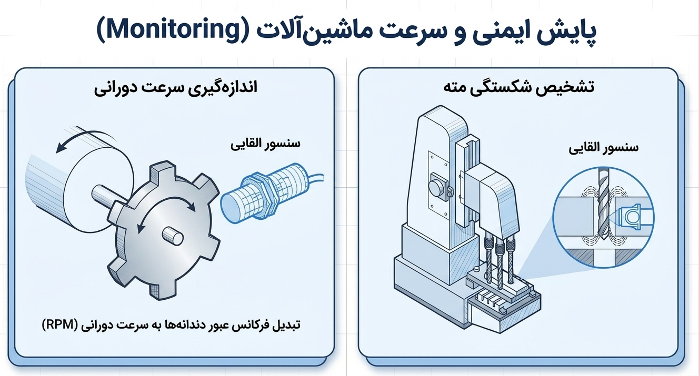

سنسورهای القایی تنها به فلزات حساس هستند و بر اساس تغییرات میدان الکترومغناطیسی کار میکنند. در یک کویل با هسته فریت، جریان متناوب فرکانسبالا (صدها کیلوهرتز) تولید یک میدان مغناطیسی متناوب میکند که از سطح فعال سنسور بیرون میزند. وقتی یک قطعه فلزی وارد این میدان شود، جریانهای گردابی (Eddy Currents) در سطح فلز ایجاد میشوند که انرژی از میدان میکشند و دامنه نوسان را کاهش میدهند. این افت دامنه، سیگنال تشخیص است.

اسلاید ۴ — آناتومی سنسور القایی: سطح فعال، بدنه رزوهدار و ساختار داخلی
اصل فیزیکی
جریان گردابی (Eddy Current) ناشی از میدان مغناطیسی متناوب در سطح فلز هدف، انرژی نوسانساز را کاهش میدهد.
متریال هدف
فقط فلزات. فولاد ضریب کاهش ۱، آلومینیوم ۰.۳۵ تا ۰.۵، مس ۰.۳ تا ۰.۴ (نیازمند ضریب کاهش).
محدوده تشخیص
۰.۸ تا ۱۵ میلیمتر (بسته به سایز و فلش). برای سنسور M18 معمولاً ۵-۸ میلیمتر.
مقاومت محیطی
IP67/IP69K، مقاوم به روغن، گرد و غبار، رطوبت، ضربه و لرزش صنعتی.
ضریب کاهش (Reduction Factor): مسافت تشخیص به جنس فلز بستگی دارد. فولاد ضریب ۱ دارد، اما آلومینیوم ضریب ۰.۳۵-۰.۵ و مس ۰.۳-۰.۴. بهعنوان مثال یک سنسور M18 که با فولاد تا ۸ میلیمتر تشخیص میدهد، با آلومینیوم فقط تا ۳.۵ میلیمتر کار میکند.
📐 خطی و دورانی — موقعیت در دو بعد
سنسورهای القایی فقط حضور/غیاب را تشخیص نمیدهند؛ با چیدمان مناسب میتوانند موقعیت خطی و دورانی را هم اندازه بگیرند. یک سنسور خطی از عبور یک شفت دندانهدار، و یک سنسور دورانی از چرخش یک گیربکسی یا شفت، موقعیت را پیگیری میکند.

اسلاید ۵ — دو کاربرد موقعیتسنجی: کنترل دورانی و کنترل خطی با سنسور القایی
⚙️ پایش سرعت ماشینآلات (Speed Monitoring)
یکی از کاربردهای صنعتی سنسور القایی، پایش سرعت دورانی ماشینآلات است. با نصب سنسور روبروی یک چرخ دندانهدار، هر بار که یک دندانه از مقابل سنسور عبور میکند، یک پالس تولید میشود. فرکانس این پالسها (بر حسب هرتز) ضربدر ۶۰ و تقسیم بر تعداد دندانهها، سرعت دورانی را بهصورت RPM میدهد.

اسلاید ۶ — پایش سرعت: تبدیل فرکانس عبور دندانهها به RPM
// محاسبه RPM از تعداد پالس سنسور القایی
const teeth = 60; // تعداد دندانه چرخ
const sample_ms = 1000; // نمونهبرداری ۱ ثانیه
let pulseCount = 0;
attachInterrupt(0, () => pulseCount++, RISING);
function readRPM() {
const freq_Hz = pulseCount / (sample_ms / 1000);
const rpm = (freq_Hz * 60) / teeth;
Serial.print("RPM = ");
Serial.println(rpm);
pulseCount = 0;
}